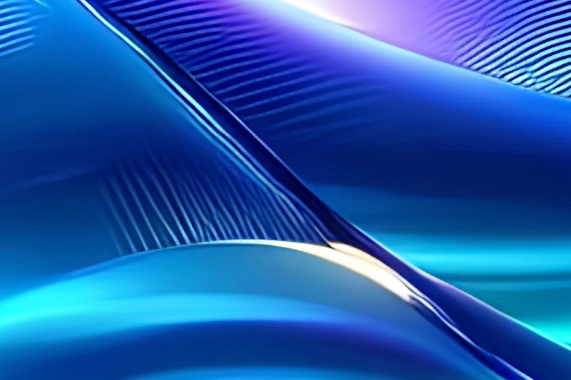
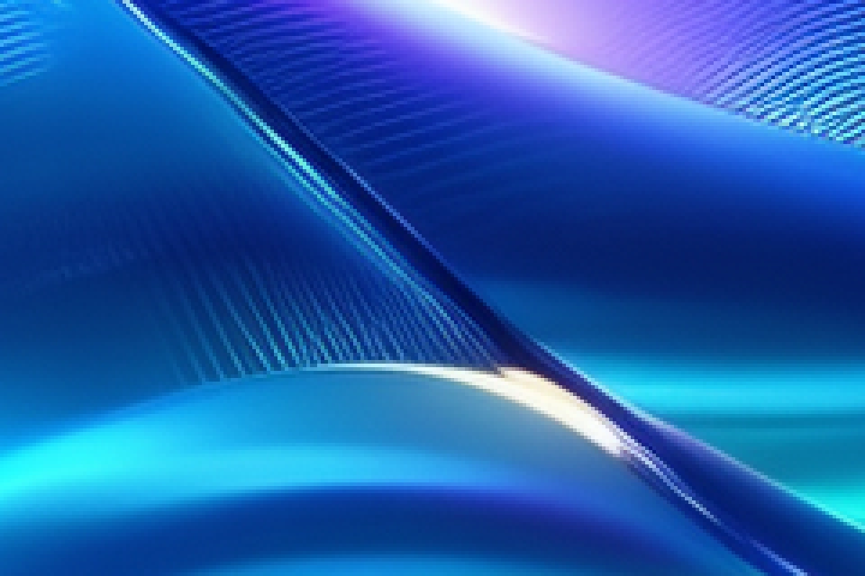

Нейросетевое увеличение изображений на MacBook или компьютере со слабой видеокартой. Несколько моделей адаптированы к самостоятельному запуску на облачном GPU; настройки качества и пакетная обработка доступны из локального клиента.
Реальный результат обработки. Исходная графика создана ИИ; это демонстрационный материал.
4×по ширине и высоте
6144 × 2560размер сохранённого результата
16-bit RGBформат мастер-файла PNG
01 / ЗАДАЧА
Получить качественный апскейл на слабом компьютере
Требовался качественный нейросетевой апскейл без мощной локальной видеокарты и без ручной обработки в графическом приложении. Задача — адаптировать несколько предобученных моделей и их параметры для самостоятельной работы на облачном GPU. Пользователь выбирает подходящую модель и настройки со своего MacBook или слабого компьютера, а тяжёлые вычисления выполняются удалённо. Обработка целой папки — дополнительная автоматизация этого процесса.
02 / РЕШЕНИЕ
01Папка изображений
Локальный клиент собирает файлы и отправляет их последовательно.
02Подготовка модели
Разные входы ONNX приводятся к нужным форматам и параметрам.
03Облачный GPU
Тайлы обрабатываются на NVIDIA L4; перекрытия сглаживают границы.
04Готовые мастеры
Результат собирается в целое изображение и сохраняется в PNG.
03 / ИНЖЕНЕРИЯ
Как модели стали самостоятельным сервисом
Адаптация нейросетей
Недостаточно просто загрузить файл нейросети: разные модели принимают разные входы. Для каждого варианта настроены имена тензоров, формат FP16, масштаб 2×/4× и параметры шума, резкости и сжатия. Так модель получает данные в том виде, который ожидает.
Инференс по частям
Модель обрабатывает небольшие участки, а результат нужен цельный. Изображение разбивается на тайлы 128 или 192 пикселя с перекрытием 32 или 48 пикселей. В областях перекрытия результаты смешиваются по весам, чтобы соединять соседние участки. После сборки убирается добавленная рамка.
Среда выполнения
Обработка отделена от компьютера пользователя: клиент отправляет файл, а CUDA-контейнер с ONNX Runtime выполняет вычисления на облачной NVIDIA L4. Модели хранятся в постоянном томе; их не нужно передавать вместе с каждым изображением.
Пакетная обработка
Клиент последовательно проходит по файлам выбранной папки. Можно задать модель, масштаб, шумоподавление, резкость и разрядность PNG. Результаты сохраняются в отдельную папку, поэтому исходные изображения остаются на месте. Не нужно повторять запуск для каждого файла.
04 / РЕЗУЛЬТАТ
От 1536 × 640 к 6144 × 2560
Один и тот же участок исходника и результата 4×. Двигайте разделитель и сравнивайте мелкие линии и переходы света.


ИсходникПосле апскейла
↔
Исходный фрагмент 240 × 160 увеличен в 4 раза без интерполяции; фрагмент результата 960 × 640 показан в том же поле. На небольшом экране оба уменьшаются одинаково. Веб-превью — 8-битные; исходный мастер остаётся 16-битным.
Снимки протокола собраны из настоящих журналов клиента и сервера и проверки полученного PNG. Это подтверждение выполнения, а не макет интерфейса приложения.
Клиент получил файл. Проверка заголовка PNG подтвердила размеры и 16 бит на канал.
Инференс 55 тайлов занял 6,25 с. Клиентский вызов до получения файла — 113,29 с, включая подготовку GPU-обработчика, инференс, кодирование и передачу результата. Это один замер, не обещание скорости для любых изображений.
05 / ДЕМОНСТРАЦИЯ
Что запускается под капотом
Три фрагмента настоящего кода показывают, как решение работает: где задаётся видеокарта, как обрабатываются части изображения и как отправляется целая партия. Откройте любой файл на GitHub, чтобы посмотреть реализацию полностью.
Выберите модель и параметры качества. Клиент передаст изображение облачному обработчику и сохранит полученный PNG. В примере — настройки выполненного запуска; путь к папке заменяется на свой.
Сравнение показывает результат настоящего облачного запуска 6 октября 2026 года. Полученный PNG проверен: 6144 × 2560, 16 бит на канал. Модели сторонние; код приложения публикуется отдельно от весов.